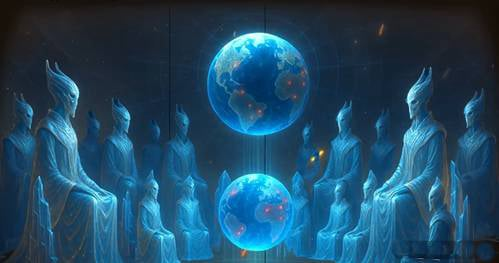
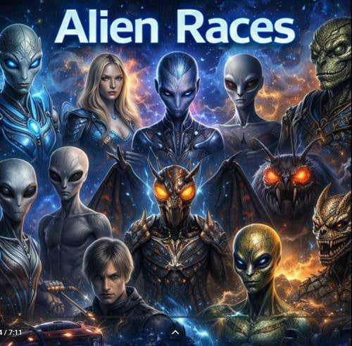
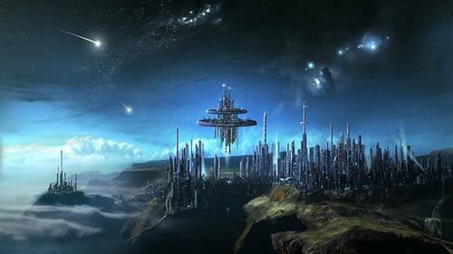
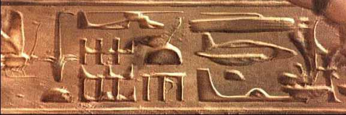
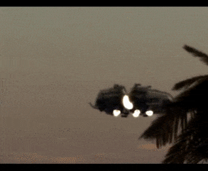
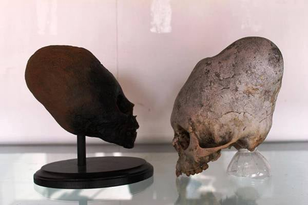
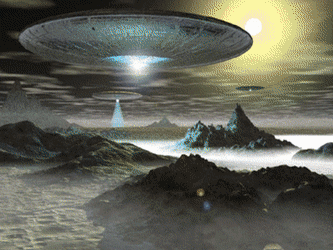

Preporuka za ovaj jedinstveni uređaj za zaštitu od tehničkih i drugih zračenja.
(Uređaj preporučuje i Spasoje Vlajić)

Nadam se da ste do sada shvatili da nismo sami u svemiru.Ta priča da smo sami u svemiru je izmišljena iz mnogobrojnih razloga a možda glavni je da bi određeni krugovi moći ili vlada u senci ove planete mogla da koristi ta znanja i tehnologije koje dobijaju od Vanzemaljaca i da bi se to moglo koristiti u njihovu korist i manipulisati ostatkom čovečanstva.S druge strane ni ljudi nisu još ovladali ni samim sobom a kamoli da razmišljaju o ovakvim stvarima samo bi im poremetilo život u lažnoj matrici ovog 3d matrixa koji i jeste zamišljen da bude dominacija laži i straha,što naravno i odgovara ovim negativnim vladarima iz senke.Vanzemaljci su na zemlji od kada je sveta i veka i stvorili su čoveka.Ovo je moja poslovica jer je baš tako bilo. Čoveka nije rad stvorio nego je nastao zbog rada,odnosno da bi bio rob,što je ostao do dana današnjeg ali to uskoro treba da se promeni. Mada se neki plaše tih promene i više vole da budu robovi ali dobro,svako je svoj gazda.Vrsta vanzemaljaca ima koliko vam duša poželi.Sve što ste gledali u sf filmovima je verovatno oko 1% onoga što postoji.Pa ovde kod nas u 3d stvarnosti sve se vrti oko tih 1-5%.I mozak radi u tom opsegu,i vidimo svemir u tom opsegu,i sve tako redom.Na zemlji trenutno ima oko 12 vrsta u stalnoj postavi koji odlučuju o događajima na zemlji i oni su taj famozni veliki brat.U poslednje vreme tokom 2026. počelo je i zvanično objavljivanje o postojanju vanzemaljaca i to će ići postupno jer dolazi novo doba i do početka toga treba sve da se objavi a to će biti negde oko 2030.godine.Mora da se pušta sve više istine jer ćemo uskoro živeti u jednoj potpuno izmenjenoj stvarnosti koja neće imati puno veze sa sadašnjim načinom života,a i formiranje nove matrice je već naveliko u toku što možete lako da primetite po obesmišljavanju svega što se nekada smatralo za vrednost.

Većina ih je negativne orjentacije prema ljudima,a oni imaju svoje nadređene koje mora da slušaju da bi napredovali u službi.Oni negativni vanzemaljci služe demonima koji su iznad njih i mora da prave haos na svakoj planeti gde se nađu da bi izazivali negativne reakcije kod ljudi jer se demoni hrane tom energijom.Bez nje oni ne mogu da opstanu pa ukoliko je nema dovoljno napuštaju okruženje planete što bi trebalo uskoro da se desi,zbog pozitivnih promena na zemlji koje su u božanskom planu.A sa onim pozitivnima ćemo onda lako,samo treba biti oprezan,biće puno zamki na putu.Sada baš ulazimo u završnu fazu koja je i najopasnija.Oni pozitivni imaju jedan princip nemešanja koji važi u njihovom svetu ali bar rade na tome da svakom daju šansu izbora.Naravno na višem nivou iznad njih sve je pod kontrolom viših bića,Anđela i samog Boga tako da ovi negativni mogu da prave zlo samo koliko im se dopusti ili koliko ljudi sami dopuste i pristanu na to.Ovi negativni imaju odliku da neverovatno mnogo lažu i uvek obećavaju sve što hoćete samo da pristanete na njihove planove i rešenja nekog problema koji su oni sami pre toga napravili i nametnuli čovečanstvu,ali im je mana nestrpljivost.Imaju naravno mnogo napredniju tehnologiju od ljudske i često neke bajate stvari daju ljudima u zamenu za ekperimente na ljudima i genetski inžinjering koji se naročito u SAD masovno obavljaju.Neki predsednici država su pokušali da se odupru svemu ovome pa su loše završili a jedan od njih u SAD u novije doba je bio Kenedi.Ne samo što su ubili njega nego i čitavu rodbinu praktično.Odslušajte njegov poslednji govor,koji je tek bio priprema za pravi govor u kome je planirao da sve ovo objavi javno celom svetu.U ovom govoru posebno spominje Novi svetski poredak i Vanzemaljce i zato je i ubijen.Rekao je da će sve objaviti kada se vrati iz Dalasa jer ljudi moraju da znaju istinu o svemu ovome...
Ali nije on bio jedini i mnogi pre njega su slične stvari pokušali i isto završili.Možda su bili malo ispred svog vremena,čini mi se da su malo požurili,ljudska svest još nije bila spremna za tako nešto a nije bilo ni vreme.Međutim vreme za njihovo zvanično pojavljivanje u javnosti se bliži i ono što bi sada trebalo svi da znaju(neki upućeniji već znaju) je projekat plavi zrak.
Preuzmite fajl ispod i pročitajte detaljnije...
Pročitajte obavezno i širite dalje to je jedini način da se to izbegne,mada sam primetio da u tom slučaju obično malo modifikuju plan ako ne i drastično.Najviše što ne vole je da budu razotkriveni pre nego što nešto urade.
Mnogi vidim na internetu očekuju pojavljivanje ovih pozitivnih vanemaljaca i nikoga više i to odmah masovno ali su mnogo naivni.Prvo masovno se neće pojavljivati dok ne pređemo na višu dimenziju jer bi oni trebalo da siđu na našu što znači ograman utrošak energije,što im skraćuje život drastično.Nije to tek tako šetati se između dimenzija.I kada rade to ne zadržavaju se dugo.
Što se tiče negativnih vanzemaljaca njima nije problem jer obožavaju 3d realnost i međudimenzionalne prostore.E sad jedino neki koji su savladali i tu nadoknadu energije a žive još uvek u fizičkom telu.Ja ne znam za njih možda i to može,ali teško.
Znači kada se pojave vanzemaljci biće prvo lažne projekcije na nebu,među njima i zemaljski i vanzemaljski nlo-i.Ali jedno je sigurno, svet vrlo brzo posle toga neće biti ni nalik današnjem.Šta mislite da dolaze da vam daju čokoladu? Ne,oni se pojavljuju kada je kraj ciklusa na planeti i svakako će pokušati(naročito ovi negativni)da vas pridobiju kao da su oni spasioci,mesije.Možda daju i čokoladu ko zna.Odgledajte seriju V koju sam spomenu na strani filmovi,govori dosta o njihovim planovima i baš o ovom scenariju a po svemu sudeći sprema se baš u realizacija ovog scenarija.

Verovatno se pitate kako vanzemaljci putuju kroz svemir s obzirom na velike razdaljine? Koriste jednu posebnu dimenziju za to koja se zove Hiperspejs,to vam je nešto kao autoput kroz svemir.Za 1 sekund prelazite razdaljinu od milion svetlosnih godina tako da im do susedne galaksije Andromede treba samo 2s.Naravno ovo mogu samo oni dosta napredni.Ostali prvo mora da napuste sunčev sistem brzinom svetlosti i tek kada se dovoljno udalje idu u hiperspejs da ne bi formirali crne rupe koje mogu da progutaju i čitav sunčev sistem.Dok oni mnogo napredni imaju direktne teleportacije i bez potrebe za svim ovim,ali zato su im potrebne mape svemira,tačne kordinate,zvezdane kapije i td.Verovatno ste dosta ovoga već videli u sf filmovima.Sada da znate sve je to istina,sve postoji,malo modifikuju radnje i neke stvari ali suštinski to sve postoji.Ona serija Galaktika vam je praktično priča o tome kako je sve počelo u našoj Galaksiji.Ima puno istine u svakom slučaju.Interesanto je to da sve filmove i serije gde se spominju vanzemaljci,moraju da odobre sami vanzemaljci barem kada je Holivud u pitanju.I dosije X je praktično sniman na osnovu istinitih događaja a u zadnjoj epizodi starog serijala vam otkrivaju jednu veliku tajnu ,obratite pažnju.
Tako da ima više vrsta vanzemaljaca koji su prisutni ovde na zemlji i bave se usmeravanjem događaja na zemlji,ovi negativni bi hteli što više ratova i da ljudi žive u strahu i oni za sada dominiraju ali će uskoro istorijska smena da se desi,bar se nadam iako dosta zavisi i od svesti ljudi ,ako ne bude bar dovoljne kritične mase osvešćenih i značajnijih pomaka na planeti u pozitivnom pravcu i ovi pozitivni vanzemaljci će dići ruke od svega i prepustiti nas do kraja ovim negativnim što bi moglo da se završi brisanjem čovečanstva zbog pogrešnog negativnog usmerenja koje neminovno vodi u slepu ulicu i više puta u istoriji se upravo ovo dogodilo.Odgledajte dobro film "Dan kada je Zemlja stala" to vam je taj scenario.Po mojim informacijama zemlji je dat rok da ispune zahteve u tom pravcu već više puta i nije baš bilo dobro ,uglavnom za sada je odloženo brisanje ovakvog čovečanstva za neko vreme,prate situaciju.
Pripreme za objavljivanje su već u toku:
Preuzmite fajlove ispod i pročitajte detaljnije
(na osnovu zvanične objave)

Preuzmite fajlove ispod i informišite se detaljnije
1. Plejađani (Plejade)
• Poreklo: Sazvežđe Plejade (zvezdani sistemi poput Alciona, Merope, Maje).
• Nivo svesti / Dimenzija: 4D i 5D gustina svesti.
• Polaritet: Pozitivan (Orijentacija ka služenju drugima / Služba stvoritelju).
• Opis i karakteristike: Prikazuju se kao visoki bića humanoidnog, "nordijskog" izgleda (plava kosa, svetle oči). U ezoterijskim tekstovima posmatraju se kao stvoritelji i duhovni vodiči ljudske rase koji prenose učenja o podizanju frekvencije, razvoju svesti i oslobađanju od unutrašnjih blokada. Ne intervenišu direktno zbog poštovanja Zakona slobodne volje.
2. Reptiloidi (Sistem Alfa Drakonis / "Drako")
• Poreklo: Zvezdani sistem Alfa Drakonis (Alpha Draconis) i Orion.
• Nivo svesti / Dimenzija: 3D i 4D gustina svesti.
• Polaritet: Negativan (Orijentacija ka služenju sebi / Kontrola i dominacija).
• Opis i karakteristike: Prikazuju se kao visoka bića ljuskave kože, vertikalnih zenica i snažne građe. U ufološkim izvorima opisuju se kao hijerarhijski organizovana ratnička rasa vođena principom kontrole, moći i osvajanja.Oni funkcionišu kroz stroge kaste (gde Drako elita upravlja nižim ratničkim vrstama) i primarno deluju iz senke, koristeći kontrolu matričnih sistema i nisko-frekventne emocije (strah, konflikt) za održavanje uticaja.
• • Drakonci (Alfa Drakonis): Oni su sama vrhuška, "kraljevska" kasta i arhitekte te matrice. Dolaze sa zvezdanog sistema Alfa Drakonis. U pitanju su izuzetno visoka bića (često sa krilima i rogovima), koja imaju izrazito razvijenu intelektualnu i tehnološku moć, ali potpuno odsustvo empatije. Oni skoro nikada ne dolaze direktno na fizički teren; oni su komandanti koji deluju iz pozadine.
• • Reptili / Reptiloidi (Sazvežđe Orion): Oni su izvršna kasta, ratnici i operativci. Sazvežđe Orion (posebno pojas Oriona) bilo je glavno poprište tzv. Orionskih ratova, gde su ove grupe uspostavile svoju bazu. Mnoge reptilske grupacije sa Oriona su zapravo potčinjene Drakonskoj eliti.
Drakonci su ideolozi i vladari sa Alfa Drakonis, a "obični" Reptiloidi sa Oriona su njihova vojska i administracija.Čuli ste za drakonske kazne,to od ove vrste potiče.
3. "Sivi" (Zeta Reticuli / Zeta Retikulanci)
• Poreklo: Zvezdani sistem Zeta Reticuli.
• Nivo svesti / Dimenzija: 3D i 4D.
• Polaritet: Neutralan do negativan (zavisno od podgrupe i konteksta).
• Opis i karakteristike: Najpoznatiji tip — bića niske građe, sa velikom glavom, izrazito velikim crnim očima i sivom kožom.
Mali Sivi: U literaturi se najčešće opisuju kao biološki sintetički entiteti (automi ili radnička kasta) koji izvršavaju tehničke zadatke.
Veliki Sivi: Voditelji i naučnici koji sprovode genetske eksperimente. Njihov glavni motiv u izveštajima o otmicama jeste prikupljanje ljudskog genetskog materijala radi obnavljanja sopstvene biologije i stvaranja hibridnih rasa, pošto su izgubili reproduktivnu sposobnost usled tehnološke degeneracije.
4. Sirijanci (Sistem Sirijusa A i B)
• Poreklo: Zvezdani sistem Sirijus.
• Nivo svesti / Dimenzija: Od 4D do 6D.
• Polaritet: Mešovit / Većinski pozitivan.
• Opis i karakteristike: Pominju se dve glavne podgrupe. Bića sa Sirijusa A opisuju se kao visoko evoluirani spiritualni i tehnološki učitelji (često se povezuju sa drevnim Egiptom, gradnjom piramida i geometrijom). Bića sa Sirijusa B opisuju se kao vodenoliki entiteti ili bića specifične biologije. Smatraju se majstorima genetike i tehnologije svetlosti.
5. Arkturijanci (Arkturus)
• Poreklo: Zvezda Arkturus u sazvežđu Volar.
• Nivo svesti / Dimenzija: 5D, 6D i više gustine.
• Polaritet: Izrazito pozitivan (Visoka služba drugima).
• Opis i karakteristike: U ezoterijskoj literaturi posmatraju se kao jedna od najnaprednijih spiritualnih i tehnoloških civilizacija u našoj galaksiji. Opisuju se kao bića plavičaste kože, svetlosne prirode, koja deluju kao "iscelitelji" i zaštitnici galaktičkih prolaza.Fokusirani su na emotivno i energetsko isceljenje, emotivnu ravnotežu i pomoć planetama u procesu tranzicije svesti.
6. Orion Grupa (Sazvežđe Orion)
• Poreklo: Zvezdani sistemi unutar Oriona (Betelgez, Rigel).
• Nivo svesti / Dimenzija: 3D i 4D.
• Polaritet: Pretežno negativan (Služba sebi).
• Opis i karakteristike: Orion grupa se u ezoterijskim izvorima ne pominje kao jedna biološka rasa, već kao savez ili konfederacija različitih bića (uključujući Reptiloide i pojedine frakcije Sivih) čiji je cilj širenje kontrole, dominacije i hijerarhijskog poretka.Smatraju se glavnim pandanom duhovnim savezima koji podržavaju slobodnu volju.
7. Andromeđani (Galaksija Andromeda)
• Poreklo: Galaksija Andromeda (van Mlečnog puta).
• Nivo svesti / Dimenzija: 5D,6D i više.
• Polaritet: Pozitivan.
• Opis i karakteristike: Opisuju se kao nezemaljska, visoko razvijena bića koja posmatraju dešavanja u našoj galaksiji iz šire perspektive. Pominju se kao savetnici u galaktičkim većima, bez direktnog mešanja u prirodnu evoluciju planeta, osim kada je ugrožena kosmička ravnoteža.Oni su nešto kao mentori i kontrolori naše galaksije.
8.Insektoidne vrste (Bogomoljke):
Priča o Insektoidima (bićima koja izgledaju kao ogromne bogomoljke ili mravi) ponovo je postala aktuelna jer su ih mnogi vojni uzbunjivači i pacijenti u regresivnim hipnozama počeli masovno spominjati,ali u poslednje vreme se spominju već i poluzvanično da su u stalnoj postavi na zemlji.
Evo kakva je njihova stvarna priroda prema dubljim istraživanjima:
• Poreklo: Smatraju se jednom od najstarijih vrsta u našoj galaksiji. Često se povezuju sa sazvežđima Kasiopeja i pojedinim delovima Oriona.
• Priroda i mentelitet: Za razliku od emotivnih ljudi ili agresivnih Reptila, Insektoidi funkcionišu na nivou čiste, hladne logike i kolektivne svesti . Nemaju emocije kakve mi poznajemo. Zbog toga deluju izuzetno distancirano i hirurški precizno.
• Polaritet mešovit:
1. Neutralni "Naučnici i Genetičari": Većina Insektoida (posebno tip Bogomoljki ) deluju kao neutralni posmatrači i inženjeri genetike. Njih ne zanima dominacija radi vlasti, već održavanje bioloških eksperimenata i kosmičkih zapisa. U mnogim slučajevima otmica, oni su viđeni kako nadgledaju čak i Sive venzemaljce dok vrše zahvate.
2. Negativna frakcija (Savez sa Orionom): Pojedine podgrupe Insektoida, vodeći se isključivo hladnom logikom bez samilosti, ušle su u tehnološke paktove sa Drakonskim i Orionskim grupama. Za njih je čovek samo biološki uzorak koji treba analizirati, što ih u našim očima čini negativnim.
3. Visoko-evoluirani Insektoidi (5D+): Postoje i izuzetno stare, duhovno napredne loze ovih bića koje deluju u sklopu galaktičkih veća kao čuvari ravnoteže i vremena.
9. Lirani (Sazvežđe Lira)
Lirani se u ezoterijskim izvorima posmatraju kao prva i najstarija humanoidna rasa koja je evoluirala u našoj galaksiji.
• Poreklo: Sazvežđe Lira (sistemi oko zvezda poput Ring Nebule i okolnih zvezdanih sistema).
• Nivo svesti / Dimenzija: Izvorno su započeli svoj razvoj na 3D/4D nivou, ali su kao rasa izuzetno davno evoluirali na 5D, 6D i više gustine svesti.
• Polaritet: Izrazito pozitivan (nakon što su usled drevnih sukoba premostili i spoznali lekcije jedinstva).
• Opis i karakteristike:
Fizički izgled: Prikazuju se kao izuzetno visoki humanoidi, svetle kože i kose, ali sa specifičnim, gotovo mačkolikim crtama lica ili očiju u nekim od svojih najranijih podgrupa.
Uloga u galaksiji: Smatraju se kolevkom humanoidne genetike. Svi moderni "humanoidi" u galaksiji — uključujući Plejađane, Sirijance, Arkturijance i na kraju samog čoveka na Zemlji — nose u sebi liranski genetski kod.
Veliki Sukob (Liranski ratovi): Lira je bila poprište prvog velikog kosmičkog rata u našoj galaksiji kada su ih napale drakonske/orionske snage. Uništenjem njihovih domaćih planeta, Lirani su se rasuli po celoj galaksiji (naselivši Plejade, Sirijus i druga sazvežđa), čime je započelo veliko galaktičko naseljavanje.
U seriji Galaktika su prikazani baš ovi ratovi i događaji vezani za ovo.
10. Veganci (Zvezda Vega u sazvežđu Lira)
Iako se nalaze u istom sazvežđu, Veganci se izdvajaju kao posebna loza koja se razvila na zvezdi Vega.
• Poreklo: Zvezdani sistem Vega (najsjajnija zvezda u sazvežđu Lira).
• Nivo svesti / Dimenzija: 5D i više gustine svesti.
• Polaritet: Pozitivan (čuvari ravnoteže i duboke spiritualne nauke).
• Opis i karakteristike:
Fizički izgled: Za razliku od svetloputih Lirana, Veganci se opisuju kao bića tamnije kože (maslinaste do tamno smeđe/bakarne), tamnih i izrazito krupnih, feniksnih očiju. Njihov izgled podseća na kombinaciju drevnih indijskih ili bliskoistočnih naroda sa specifičnim, pročišćenim crtama.
Karakter i filozofija: Veganci su se tokom lirskih ratova razvili u izuzetno staloženu, duhovno i tehnološki naprednu grupu. Dok su Lirani bili više usmereni na istraživanje, ekspanziju i emociju, Veganci su razvili duboku introspekciju, filozofiju i ovladavanje energijom i geometrijom.
Genetski uticaj na Zemlju: U teorijama o genetskom inženjeringu ljudske rase, smatra se da je veganska genetika unela u ljudski dnk sposobnost za duboku intuiciju, spiritualnu stabilnost i smirenost.
11.Telosijanci / Agartanci (Unutrašnja Zemlja)
• Poreklo: Drevne civilizacije sa same Zemlje (potomci Lemurije i Atlantide) koje su se povukle ispod površine planete nakon velikih globalnih kataklizmi.
• Nivo svesti / Dimenzija: 4D i 5D gustina svesti.
• Polaritet: pozitivan.
• Karakteristike: Opisuju se kao visoki humanoidi svetle puti koji žive u visokotehnološkim, podzemnim gradovima (poput Telosa ispod planine Šasta u SAD kao deo njihove mreže gradova). Deluju kao čuvari prave istorije Zemlje, drevne tehnologije i energetskih mreža (akupunkturnih tačaka planete). Retko stupaju u direktan kontakt sa površinskim stanovništvom, čekajući da kolektivna svest dostigne viši nivo stabilnosti.
12. Anunaki (Sistem/Planeta Nibiru ili Sirijus C)
• Poreklo: Pominju se u sumerskim spisima i radovima Zeharije Sičina; vezuju se za eliptičnu orbitu planete Nibiru ili sistem Sirijusa.
• Nivo svesti / Dimenzija: 3D i 4D.
• Polaritet: Pretežno negativan do hibridno-hijerarhijski (Služba sebi / Vladavina).
• Karakteristike: Izuzetno visoki humanoidi (džinovi). U ufološkim teorijama opisuju se kao bića koja su u dalekoj prošlosti intervenisala na Zemlji radi eksploatacije resursa (zlata za stabilizaciju sopstvene atmosfere) i učestvovala u genetskom modifikovanju ranih hominida. Postavili su rane modele vladavine i kasta na površini planete.
13. Ummiti (Zvezdani sistem Wolf 424 / Planeta Ummo)
• Poreklo: Zvezdani sistem Wolf 424, oko 14 svetlosnih godina od Zemlje.
• Nivo svesti / Dimenzija: 3D i 4D.
• Polaritet: Neutralan do pozitivan (Strogo naučni / Analitički).
• Karakteristike: Izgledom gotovo identični nordijskim tipovima. Poznati su po čuvenom "Slučaju Ummo" iz 20. veka, gde su naučnicima i intelektualcima širom Evrope slali detaljne tehničke i filozofske spise. Funkcionišu po principu izuzetno uređene društvene strukture i naučnog posmatranja bez direktnog mešanja.
14. Marsovci
• Istorija i kataklizma: Mars je u dalekoj prošlosti imao gustu atmosferu, okeane i razvijenu površinsku civilizaciju. Usled velikog planetarnog sukoba ili kosmičke katastrofe, atmosfera je uništena, a površina je postala nenastanjiva i izložena radijaciji.
• Preživljavanje ispod površine: Ostatak populacije povukao se u ogromne podzemne gradove, prirodne pećine i vulkanske tunele.
• Osobine preživele populacije:
Fizički se opisuju kao visoka, vitka bića sa svetlom ili blago sivkastom kožom i krupnijim očima, prilagođena životu pri smanjenoj svetlosti i nižoj gravitiaciji.
Zbog smanjenja populacije i resursa, njihov broj je drastično opao.
• Baze na Zemlji i povezanost: Preživeli stanovnici Marsa stvorili su izvesne baze na Zemlji (uglavnom u podzemnim i podmorskim regionima) kako bi obezbedili opstanak i pratili evoluciju ljudske rase, sa kojom dele delimičnu genetsku povezanost iz davnih epoha,i retko dolaze u kontakt sa ljudima.
15. Kentaurijanci (Alpha Centauri i Proxima Centauri)
• Poreklo: Zvezdani sistem Alfa i Proksima Kentauri (naš najbliži zvezdani komšiluk, na oko 4,2 svetlosne godine).
• Dimenzija / Nivo svesti: 4D i 5D gustina svesti.
• Polaritet: Izrazito pozitivan (Visoka služba drugima).
• Karakteristike:
Prikazuju se kao visoki, mišićavi humanoidi, izuzetno blage naravi, sa visokim stepenom naučnog i tehnološkog razvoja.
Oni su glavni tehnološki i naučni zaštitnici u ovom delu galaksije.
Za razliku od Plejađana koji su usmereni na emotivni i duhovni razvoj čoveka, Kentaurijanci se fokusiraju na prenošenje naučnih koncepta — naprednu fiziku, teoriju polja i stabilizaciju ekosistema.
Često se spominju kao posrednici u mirnom rešavanju konflikata između različitih rasa i kao civilizacija koja aktivno prati i neutrališe potencijalne nuklearne ili tehnološke katastrofe na Zemlji.
16. Telurijanci / "Crni plemići" ili Drevni graditelji
• Poreklo: Pre-adamske rase sa same Zemlje i Meseca (pre više stotina hiljada godina).
• Dimenzija / Nivo svesti: 3D i 4D.
• Polaritet: Negativan do izrazito hijerarhijski (Kontrola i održavanje vlasti).
• Karakteristike:
Često ih mešaju sa klasičnim vanzemaljcima, ali mnogi uzbunjivači navode da je reč o veoma starim biološkim lozama koje su obitavale na Zemlji pre današnjeg čoveka.
Fizički se opisuju kao izduženih lobanja , visoke građe i slabije muskulature.
Prema ovim teorijama, oni su izgradili prve megalitske objekte (piramide, podzemne komplekse) i uspostavili prve sisteme kontrole, pre nego što su delimično potisnuti u podzemne baze od strane kasnijih osvajača (Drakonaca i Anunakija).Njihovi ostaci i aktivne podzemne frakcije i dalje vrše jak uticaj na tajne strukture moći na površini planete.
17. Arijanci / Teluriti iz sazvežđa Orion (Podgrupa zvezde Mintaka)
• Poreklo: Zvezda Mintaka unutar Orionskog pojasa.
• Dimenzija / Nivo svesti: 4D i 5D.
• Polaritet: Pozitivan (Oaza unutar Oriona).
• Karakteristike:
Ovo je izuzetno važna grupa jer dokazuje da nisu sva bića iz Oriona negativna.
Dok su Betelgez i Rigel u Orionskom pojasu bili glavna uporišta Drakonsko-Reptilske koalicije, planete oko zvezde Mintaka bile su poznate kao "vodeni svetovi" i "oaza mira".
Ova bića izgledaju vodeno-humanoidno ili izrazito svetlo i deluju kao borci za slobodu koji unutar samog Oriona vekovima pružaju otpor negativnim mrežama.
Oni posećuju Zemlju prvenstveno da bi pomogli dušama koje nose "orionsku karmu" (traume iz drevnih kosmičkih ratova) da se konačno iscele i oslobode matrice kontrole.
Što se tiče NLO pojava to vam nije ništa drugo nego kombinacija zemaljskih,ljudski napravljenih nlo,i vanzemaljskih nlo.Većina nlo pojava na nebu su ljudski napravljene letilice.Prve su napravljene još pre 2. svetskog rata i korišćeni su u manjoj meri i tokom samog rata.Prvi eksperimenti su počeli još oko 1.svetskog rata.Postoje brojna svedočenja naročito tokom 2. svetskog rata o viđanju nlo pojava i vojnih dejstava a postoje i dobri dokumentarci o tome.Priča o Rozvelu i padu nlo je samo jedna od bezbroj takvih,samo eto ovu su u prvi mah objavili i na vestima pa se zato pročulo a kasnije su krenule one priče o metereološkim balonima.Znate već te priče,ima to na ovim njihovim raznim kanalima national geografic,history i td.Ono što je interesantno,ljudima je dato dosta te tehnologije,a do neke su i sami došli,dobili su i mape svemira od bića sa Sirijusa i nekih drugih pa putuju po čitavom svemiru.Detaljnije u rubrici svemir o ovim putovanjima.Inače nlo pojave se pojavljuju u zabeleškama i crtežima kroz čitavu istoriju čovečanstva a ima ih i na samim piramidama i to svih vrsta i kombinacija.Ovo dole je uvećan snimak sa jedne piramide.Možete videti letilice svih vrsta.


Svakodnevno se pronalaze ostaci vanzemaljaca koji su tu od početka postojanja života na zemlji pa ponekad ispliva po nešto na površinu iz tajnih arhiva.


Nlo tehnologija funkcioniše uglavnom tako što stvara sopstveno gravitaciono polje pa na njega ne utiče gravitacija neke planete,pa kada vam se čini da stoji u mestu on je zapravo sleteo u svom gravitacionom polju što je poznato pod nazivom antigravitacija.Ali ponekad se desi da običan radar ili neki drugi zemaljski uređaji uspeju da ga ometaju pa onda padnu,a nekada padnu i namerno da bi postepeno ljudi mogli da dođu do ovih tehnologija.Verovatno se pitate kako u tako ponekad male nlo letilice može da stanu neki vanzemaljci.Ima ih raznih veličina od onih ogromnih matičnih brodova koji su par desetina kilometara i koji ne prilaze tako blizu zemlji pa do ovih najmanjih koji se često viđaju a zapravo ti mali kada se uđe unutra uopšte nisu mali.Spolja deluju mali a ko je imao prilike da gleda i uđe unutra radi se o ogromnim prostorima jer koriste očigledno neku tehnologiju minijaturizacije svega što uđe unutra a opet kada izađete ste normalne veličine.Opet ima i onih običnih koji nisu veliki jer zavisi koja vrsta vanzemaljaca je u pitanju.Nisu svi isti.Ponekad koriste i prazne letilice nešto kao dronovi koji samo osmatraju.Opet ima i onih naprednih koji su nešto kao organska svesna veštačka inteligencija pa možete da telepatski komunicirate sa samom letilicom i takvim nlo-ima se obično upravlja mislima.Ovi napredniji imaju tako naprednu tehnologiju da je ljudima to nazamislivo,na primer neki napredniji nlo-i su u stanju da radi bržeg kretanja kroz svemir pređu u nematerijalni oblik i tada mogu da se kreću brzinom misli.
Ove bar osnovne vanzemaljske tehnologije su savladane i već u tajnosti su toliko daleko otišle da je kako su i priznali mnogi naučnici koji rade na tome već danas moguće zemaljskim letilicama otići na vrlo udaljene planete u našoj galaksiji a već postoji i zemaljska svemirska flota koja krstari našom galaksijom a sastoji se od zajedničkih snaga SAD,Rusije i Kine mada će se uskoro verovatno pridružiti još neke zemlje.Najverovatnije će i ovo biti objavljeno jer ima naznaka u tom pravcu.
Ovde možete napraviti manju ili veću kupovinu onoga što je na stranici knjige ,kontakt i porudžbine objašnjeno.Znači moguće su 2 vrste porudžbine :
1.Manja kupovina se tretira više kao donacija ali za uzvrat ipak dobijate jednu vrlo zanimljivu knjigu u pdf-u o Nikoli Tesli koja će vas oduševiti,spada u raritete i malo se zna o ovome.Vrlo poučna stvar.
2.Veća kupovina podrazumeva kompletan detaljan materijal o ovim temema sa sajta koji je objašnjen na stranici knjige ,kontakt i porudžbine i ima oko 50gb i nakon poručivanja možete preuzeti preko linka ili za one u Srbiji može i pouzećem.Za one koji plaćaju preko linka ispod, izaberite opciju 60 evra.To se podrazumeva da je ova porudžbina.Oni koji hoće pouzećem neka me kontaktiraju.
Prilikom procedure kupovine uloliko ste za manju kupovinu ili donaciju možete izabrati jedan od već ponuđenih iznosa ili jednostavno u polje gde piše iznos vi upišite svoj iznos po želji,a za veću porudžbinu kao što rekoh birate 60 evra opciju.Nakon završenog plaćanja bićete kontaktirani preko emaila u roku 24 časa i dobićete ili link za preuzimanje ako je veća porudžbina ili knjigu na email ako je manja.
Preporuka za ovaj jedinstveni uređaj za zaštitu od tehničkih i drugih zračenja.
(Uređaj preporučuje i Spasoje Vlajić)